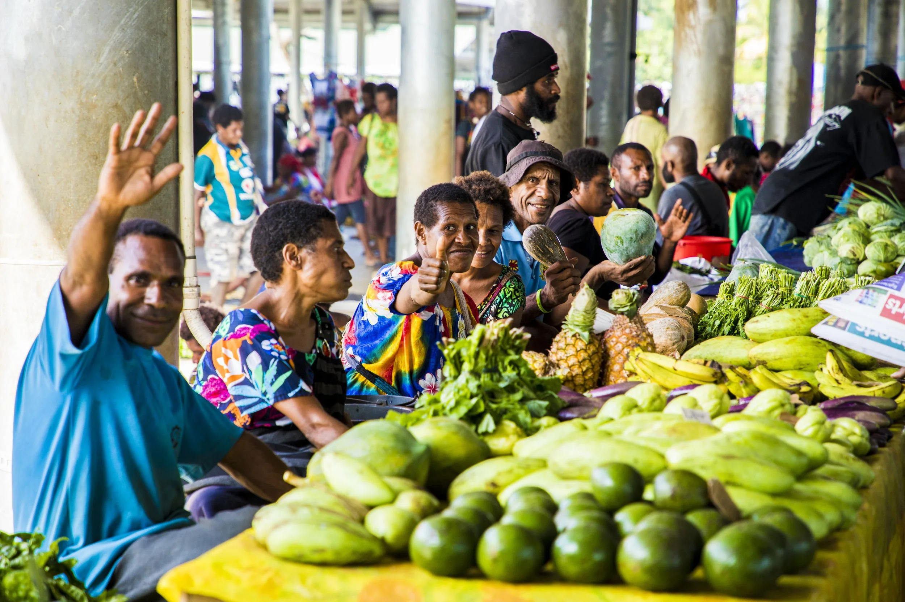
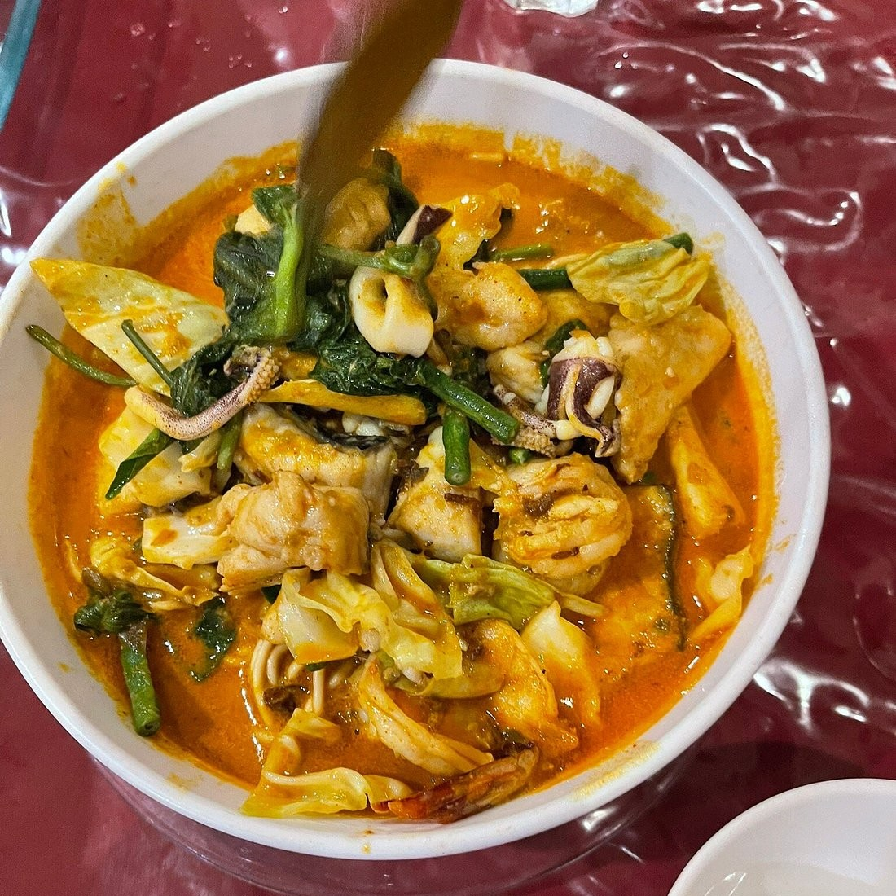

hotels
Hotels & City-Style Stays
Madang Town has standard hotel-style accommodation suited to business travellers and tourists who want to be close to the harbour, shops and transport links.

From beachfront resorts to small guesthouses, and fresh reef fish to traditional Papua New Guinean cooking — here's a starting point for planning where to sleep and eat during your time in Madang Province.
before you book
Accommodation and dining options in Madang Province change over time, and availability shifts with the season. Rather than naming specific businesses we can't verify, the categories below describe what's generally available so you know what to search and ask for — confirm current details, pricing and availability directly with providers or a local operator before you travel.
where to stay
Options generally cluster around Madang Town and the nearby coast, with island-based and more remote stays available further out.
Madang Town has standard hotel-style accommodation suited to business travellers and tourists who want to be close to the harbour, shops and transport links.

Smaller, often family-run guesthouses and homestays offer a more personal alternative to larger hotels, and can be a good way to connect with local hosts.

Smaller, nature-focused lodges and island-based accommodation put you closer to reefs, rainforest or quieter stretches of coast, generally with fewer rooms and a simpler style than a full resort.

Simpler rooms and guesthouses keep costs down for travellers prioritising experiences over comfort — a practical option if you're planning a longer stay in the province.

beachfront
For travellers who want to stay close to the water, beachfront and coastal resort-style properties around Madang generally offer pools, on-site dining and easier access to boat trips and reef activities. This tier tends to book up faster in peak periods, so plan ahead where possible.
See What to Eatpremium
At the higher end, expect more spacious rooms, better bedding and finishes, and often a more central or scenic location. Even "premium" in Madang tends to be understated rather than flashy — the setting does most of the work.
Plan Your Trip
what to eat
Fresh seafood and tropical produce are constants along this coast, alongside traditional Papua New Guinean cooking and a small but growing café and dining scene in Madang Town.

Local markets sell tropical fruit, greens and staples like sweet potato and cassava, alongside coconut and sago, which are central to cooking across much of Papua New Guinea's coastal regions.

Alongside seafood and local dishes, Madang Town has restaurant options serving grilled meat and more familiar international-style menus for travellers who want variety.

A small café scene in Madang Town covers coffee, light meals and casual dining — a useful option for breakfast or a break between activities.
seafood
With reefs and open ocean right along the coast, fresh fish and other seafood are a highlight of eating in Madang. Restaurants and guesthouses close to the water often serve the day's catch, and it's worth asking what's fresh rather than sticking to a fixed menu.
Back to Where to Stay
traditional
Traditional Papua New Guinean cooking often centres on staples like sago, sweet potato and greens, frequently cooked with coconut milk, and sometimes prepared in a mumu — an earth oven used for special occasions. Papua New Guinea is also known for highland-grown coffee, among the more distinctive coffee-growing regions in the South Pacific, and it's worth seeking out locally roasted beans while you're here.
Read More About Culture

With a place to stay and an idea of what to eat sorted, pair it with the full range of experiences Madang has to offer.
Browse Experiences & Adventures